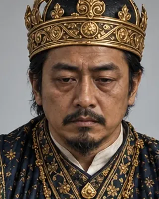

সুটিংফা (নৰীয়া ৰজা)
1644–1648 · Nineteenth Ahom king

Brother of Suramphaa; deposed by the Burhagohain in 1648 and later murdered.
Record confidence: medium.
Open interactive profile
1644–1648
1648